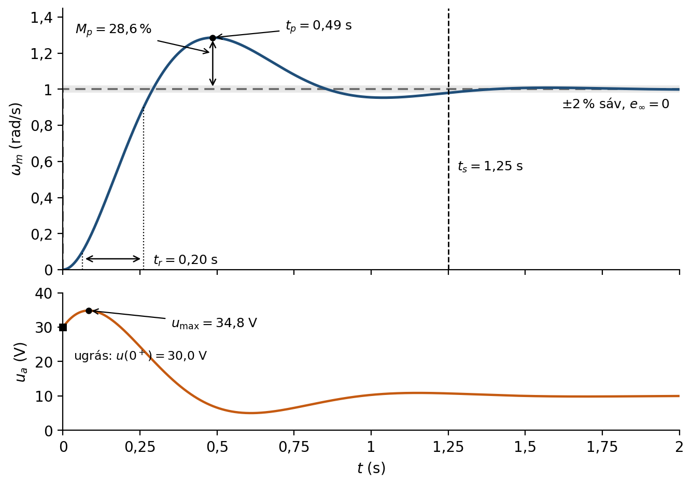
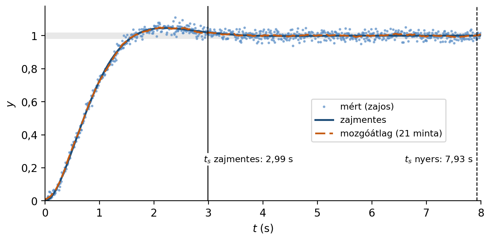

A DC-motor sebességszabályozójához két változatunk van. Az egyik gyorsan felfut, de jócskán túllő. A másik lassabban indul, alig lő túl, és kisebb feszültséget kér. Melyik a jobb? „Ez szebbnek látszik” nem válasz: a döntéshez számok kellenek, pontosan rögzített definíciókkal, mert ugyanarra a görbére két eltérő definíció két eltérő beállási időt adhat.
A A szabályozási kör elemei és a szabályozási
feladat alfejezetben a követelményeket szavakkal soroltuk fel:
gyorsaság, pontosság, csillapítottság, beavatkozási energia. Most
mindegyikhez mérőszámot rendelünk, rögzítjük a könyv definícióit, és
megmutatjuk, hogyan számolja őket a
controlkit.sim.step_info.

A felső panel azt mutatja, mit ért el a szabályozás, az alsó azt, mibe került. A feszültség már a pillanatban V-ra ugrik, és V-ig emelkedik. Ha a tápegység csak V-ot ad, ez a válasz a valóságban nem valósul meg. „A beavatkozó jel is eredmény”: mindig nézd meg -t.
Mielőtt tovább olvasol, tippelj: ha az alapjel-súlyt -ről -re vesszük (kisebb túllövés, lágyabb indulás), mennyit változik az abszolút hiba időintegrálja? A válasz a Kód részben meglepő lesz.
Legyen a kimenet kezdeti, a végértéke, a változás. A normált válasz , amely -ból az -be tart, akár felfelé, akár lefelé léptünk.
Definíció. A könyv minőségi jellemzői:
| Jellemző | Jel | Meghatározás |
|---|---|---|
| emelkedési idő (rise time) | első -es és első -es átlépése közötti idő | |
| túllövés (overshoot) | ||
| csúcsidő (peak time) | maximumának ideje | |
| beállási idő (settling time) | az az idő, amelytől végig teljesül | |
| maradó hiba (steady-state error) |
Mintavett adaton az átlépéseket lineáris interpolációval,
-t
pedig a sávból utoljára kilépő minta utáni mintaponttal
számoljuk; pontossága ezért a mintavételi lépésköz. Ha a rács végén a
válasz még a sávon kívül van,
nem értelmezett (a kódban nan). Monoton válasznál
egyszerűen az utolsó (legnagyobb) minta ideje, és nem hordoz
információt.
A maradó hiba a végértékhez, a túllövés is a végértékhez viszonyít, nem az alapjelhez. Egy P-szabályozott kör lehet túllövés nélküli, miközben jelentős a maradó hibája (Állandósult hiba, rendszertípus és hibaállandók).
Zavarválasz. Ha az alapjel állandó, és zavar éri a
kört, a kimenet kitér, majd visszatér: a kezdeti és a végérték azonos,
,
a normált válasz nem értelmezhető (a step_info ilyenkor
ValueError-t dob). Ekkor a legnagyobb
eltérést
,
az annak eléréséig eltelt időt, és egy abszolút
(például
K-es) sávba való végleges visszatérés idejét adjuk meg, a zavar
nagyságával együtt. Az alapjelkövetés és a zavarelhárítás számait külön
közöljük: egy szabályozó az egyikben jó, a másikban gyenge lehet.
Három mennyiséget érdemes mindig közölni:
Egyetlen számba sűríti a teljes hibagörbét, mellett:
Ha , mindhárom integrál divergál: ekkor vagy a eltérést integráljuk, vagy rögzített időablakot használunk, és ezt közöljük. A számértékek csak azonos ugrásnagyság és azonos időablak mellett hasonlíthatók össze.
Zárt képlet az ISE-re. Standard másodrendű rendszerben (Másodrendű rendszerek) a hiba teljesíti az egyenletet, , , és .
A deriváltja -nél nulla: az ISE-optimális csillapítás (). Az IAE-re és ITAE-re nincs ilyen egyszerű képlet; numerikusan az IAE minimuma -nál, az ITAE-é -nél van.
A három „optimum” különbözik: nincs egyetlen legjobb válasz, csak adott kritérium szerint legjobb. A súlyozás megválasztása tervezési döntés; ugyanez a gondolat tér vissza az Az optimális szabályozási feladat és az LQR költségfüggvényében, ahol a beavatkozó jel négyzete is a költség része.
A követelmény csak akkor tervezhető, ha minden eleme mérhető: mit (jel), milyen gerjesztésre (ugrás nagysága, zavar), milyen számhatárral, mely definíció szerint. Példa: „A drón m-es magasságváltása legfeljebb -kal lőjön túl, s alatt álljon be, a tolóerő maradjon és N között.”
| Szöveg | Számszerű feltétel | Az -síkon / időben |
|---|---|---|
| szektor, | ||
| s (2%) | 1/s | függőleges egyenestől balra |
| N | csak szimulációval ellenőrizhető |
Az első két sor a domináns pólusokra ad becslést (zérus és további pólusok módosíthatják, lásd Magasabb rendű rendszerek, domináns pólusok és zérusok hatása). A harmadikat az időtartománybeli válaszon kell ellenőrizni, az adott ugrásnagysággal, mert a telítés nemlineáris: kétszeres ugrás nem ad kétszeres, hanem más alakú választ. A robusztusságra vonatkozó számokat (tartalékok, ) később adjuk a listához.
Valódi mérésben a jelre zaj rakódik. A csúcsot egy kiugró zajminta
adja, a beállási időt az utolsó kilógó pont. Az alábbi ábra
,
válaszra
szórású, a np.random.default_rng(25) magból generált
Gauss-zajt rak.

Gyakorlati eljárás: (1) a végértéket a farok átlagából becsüljük, nem az utolsó mintából; (2) a jelet szimmetrikus (utólagos feldolgozásban késleltetésmentes) mozgóátlaggal vagy modellillesztéssel simítjuk (Ugrásválasz-alapú modellillesztés); (3) közöljük a szűrést is. A valós idejű (csak múltbeli mintákat használó) szűrő késleltet, ami meghosszabbítja a mért időket. Ha a zaj szórása a sávszélességgel összemérhető, a -os beállási idő egyszerűen nem mérhető megbízhatóan.
A szakirodalomban és a szoftverekben eltérő definíciók élnek: -os sáv (), -os emelkedési idő lengő rendszerre, az alapjelhez viszonyított túllövés. Számokat csak a definícióval együtt hasonlíts össze.
step_info
megvalósításaA függvény lényege néhány sor:
# részlet: a controlkit.sim.step_info magja
g = (y - y0) / (yf - y0) # normált válasz: 0 → 1
rise = crossing(0.9) - crossing(0.1) # lineáris interpolációval
over = max(0.0, (g.max() - 1.0) * 100.0)
outside = np.nonzero(np.abs(g - 1.0) > band)[0]
ts = t[outside[-1] + 1] # az utolsó kilépés utáni mintaAlapértelmezésben y0 = y[0] és
final = y[-1]. Ez utóbbi veszélyes, ha az időablak rövid:
mindig add meg a final-t, ha elméletből
ismered. A teljes függvény kezeli a határeseteket is (nincs kilépés; a
végén is kint van). A code/tests/test_sim.py analitikus
válaszokkal teszteli: elsőrendű rendszerre
és
,
másodrendűre a túllövés- és csúcsidőképlet, valamint negatív irányú
ugrás.
Egy válasz s-os mintái egységugrásra (, ):
| (s) | |||||||||||
|---|---|---|---|---|---|---|---|---|---|---|---|
A kézi példa ellenőrzése, majd a motor sebesség-PI három
alapjel-súlyának összevetése. Az input_metrics saját
segédfüggvény.
import numpy as np
from controlkit import models, pid, sim
th = np.arange(11) * 0.5
yh = np.array([0, 0.30, 0.80, 1.12, 1.18, 1.09, 0.99, 0.96, 0.985, 1.005, 1.0])
i = sim.step_info(th, yh, final=1.0)
print(f"t_r = {i.rise_time:.3f} s, M_p = {i.overshoot:.1f} %, t_p = {i.peak_time} s,"
f" t_s = {i.settling_time} s")
print({k: round(v, 3) for k, v in pid.error_integrals(th, 1 - yh).items()})t_r = 0.990 s, M_p = 18.0 %, t_p = 2.0 s, t_s = 4.0 s
{'IAE': 0.93, 'ISE': 0.543, 'ITAE': 0.784}def input_metrics(u, u_before=0.0):
"""Csúcsérték és teljes változás (az ugrás előtti értékkel együtt)."""
return np.abs(u).max(), np.abs(np.diff(u, prepend=u_before)).sum()
P = models.DCMotor().tf_speed()
pi = pid.reference_motor_speed_pi()
t = np.linspace(0, 3, 3001)
print(" b M_p % t_s s IAE ITAE u_max V TV V")
for b in (1.0, 0.5, 0.0):
loop = pi.with_(b=b).closed_loop(P)
y, u = loop["Tyr"].step(t), loop["Tur"].step(t)
i, m = sim.step_info(t, y, final=1.0), pid.error_integrals(t, 1 - y)
peak, tv = input_metrics(u)
print(f"{b:4.1f} {i.overshoot:6.1f} {i.settling_time:6.2f} {m['IAE']:6.3f}"
f" {m['ITAE']:6.3f} {peak:8.1f} {tv:6.1f}")
res = pid.simulate_delay_loop(P, pi.discrete(0.001, u_min=-24, u_max=24), 3.0, 0.001, r=1.0)
i = sim.step_info(res.t, res.y, final=1.0)
peak, tv = input_metrics(res.u)
t_sat = np.sum(np.abs(res.u) >= 24 - 1e-9) * 0.001
print(f"b = 1, ±24 V: M_p = {i.overshoot:.1f} %, t_s = {i.settling_time:.2f} s,"
f" TV = {tv:.1f} V, telítésben {t_sat:.3f} s") b M_p % t_s s IAE ITAE u_max V TV V
1.0 28.6 1.25 0.277 0.088 34.8 71.8
0.5 11.6 1.23 0.273 0.066 24.2 44.1
0.0 7.1 0.99 0.363 0.091 20.4 34.6
b = 1, ±24 V: M_p = 22.0 %, t_s = 1.31 s, TV = 47.1 V, telítésben 0.295 sA és változat IAE-je majdnem azonos, a feszültségcsúcs és a TV viszont nagyon eltér. Egyetlen hibakritérium a lényeges különbséget elrejtheti. A telítéses futásnál V-os korláttal és antiwindupos digitális PI-vel ( ms) a kör s-ig telítésben van.
Végül két mérési csapda: a zaj, és a túl rövid ablak (a hőkamra -os fűtésugrására, K).
from controlkit.tf import TransferFunction as TF
tn = np.linspace(0, 8, 801)
clean = TF([4], [1, 2.8, 4]).step(tn)
noisy = clean + np.random.default_rng(25).normal(0, 0.02, tn.size)
smooth = np.convolve(np.pad(noisy, 10, mode="edge"), np.ones(21) / 21, "valid")
for name, v, yf in (("zajmentes", clean, 1.0), ("nyers", noisy, 1.0),
("simított", smooth, noisy[-200:].mean())):
i = sim.step_info(tn, v, y0=0.0, final=yf)
print(f"{name:10s} M_p = {i.overshoot:4.1f} %, t_s = {i.settling_time:.2f} s")
room = models.ThermalChamber()
for t_end in (400, 2000):
tt = np.arange(t_end + 1.0)
i = sim.step_info(tt, room.step_response(tt, 40.0)) # final = utolsó minta
print(f"ablak {t_end:4d} s: y_inf = {i.final_value:5.2f} K, t_r = {i.rise_time:3.0f} s,"
f" t_s = {i.settling_time:3.0f} s")zajmentes M_p = 4.6 %, t_s = 2.99 s
nyers M_p = 11.1 %, t_s = 7.93 s
simított M_p = 4.9 %, t_s = 2.96 s
ablak 400 s: y_inf = 17.01 K, t_r = 272 s, t_s = 379 s
ablak 2000 s: y_inf = 20.00 K, t_r = 439 s, t_s = 802 sA rövid ablak téves végértéket vesz fel, ezért a beállási idő s helyett s-nak, az emelkedési idő s helyett s-nak látszik – hibaüzenet nélkül.
final-t adj, vagy
hosszabbítsd az ablakot, és nézd meg a görbét.step_info nan beállási
időt?Továbbvitt eredmény. A könyv jellemzői a normált
válaszon:
(),
a végértékhez viszonyítva,
,
(-os
sáv, utolsó kilépés),
;
számításuk sim.step_info, a final megadásával.
A beavatkozó jelről
-ot,
TV-t és a telítés idejét közöljük. Erre épül: Ziegler–Nichols-módszerek és a relés önhangolás,
Modellillesztés és IMC/SIMC-hangolás, Tervezés a gyökhelyen, Fázisemelő (lead) kompenzátor, 1. záróprojekt: DC-motor pozíciószabályozása.
Továbbvitt eredmény. IAE, ISE, ITAE
(pid.error_integrals) eltérő optimumot ad; standard
másodrendűre
.
Használja a Modellillesztés és
IMC/SIMC-hangolás és Az optimális szabályozási
feladat és az LQR.
1. s, s, s; , s. A sávon kívül utoljára s (), így s. . , IAE s.
2. A változás nagysága fok, a sáv fok a fok körül.
3. , : -re s, -ra s. A tranziens jellemzésére a integrálja ( s) jó, a maradó hibát () külön közöljük.
4. esetén a válasz monoton, , így . , tehát .
5. -hoz , s-hoz , azaz rad/s (a -közelítés szerint). A pillanatban rad, így V/rad, rad/s, ekkor legalább kb. s. Lineáris tartományban a három követelmény együtt nem teljesíthető: vagy lazítunk a -en, vagy kisebb ugrást (pályagenerálást) írunk elő, vagy tudatosan telítéssel tervezünk és szimulációval igazolunk.
6.
zs = np.round(np.arange(0.5, 1.001, 0.01), 2)
for wn in (1.0, 3.0):
tt = np.linspace(0, 60 / wn, 6001)
vals = [pid.error_integrals(tt, 1 - TF([wn**2], [1, 2 * z * wn, wn**2]).step(tt))["ITAE"]
for z in zs]
j = int(np.argmin(vals))
print(f"omega_n = {wn}: zeta* = {zs[j]}, ITAE = {vals[j]:.4f},"
f" ITAE*omega_n^2 = {vals[j] * wn**2:.3f}")omega_n = 1.0: zeta* = 0.75, ITAE = 1.9519, ITAE*omega_n^2 = 1.952
omega_n = 3.0: zeta* = 0.75, ITAE = 0.2169, ITAE*omega_n^2 = 1.9527.
for s in (0.005, 0.02):
raw, sm = [], []
for seed in range(20):
v = clean + np.random.default_rng(seed).normal(0, s, tn.size)
f = np.convolve(np.pad(v, 10, mode="edge"), np.ones(21) / 21, "valid")
raw.append(sim.step_info(tn, v, y0=0.0, final=1.0).settling_time)
sm.append(sim.step_info(tn, f, y0=0.0, final=v[-200:].mean()).settling_time)
print(f"szórás {s}: medián t_s nyers {np.nanmedian(raw):.2f} s,"
f" simított {np.nanmedian(sm):.2f} s, nem értelmezett: {np.isnan(raw).sum()}")szórás 0.005: medián t_s nyers 3.23 s, simított 3.00 s, nem értelmezett: 0
szórás 0.02: medián t_s nyers 7.99 s, simított 3.06 s, nem értelmezett: 5A szórás mellett a sáv fél szélessége éppen egy szórásnyi, ezért a nyers adat gyakorlatilag az ablak végéig „nem áll be”. A simítás sokat javít, de a pontosságot a zaj és az ablak együtt korlátozza.